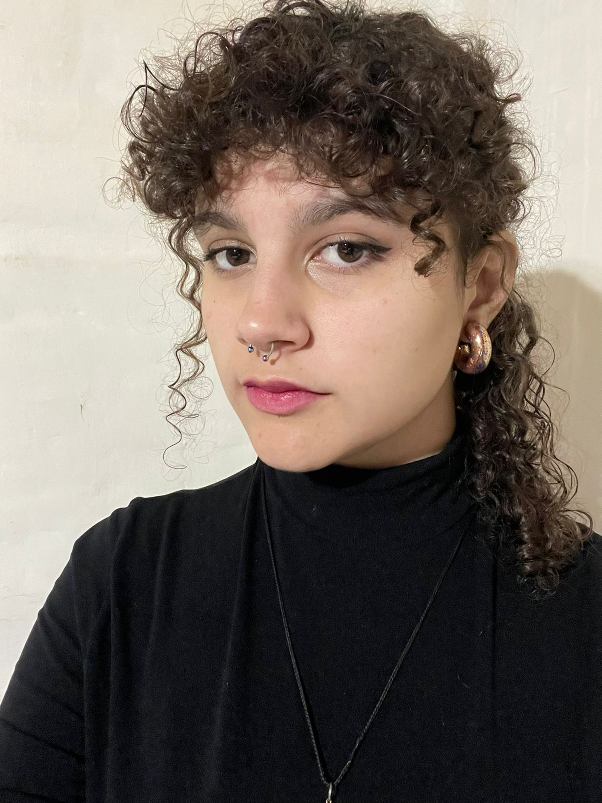

Soy estudiante de Programación en la Universidad Tecnológica Nacional(UTN), con entusiasmo por la tecnología y el desarrollo de software. Me interesa especialmente el desarrollo web y el diseño del mismo. Recientemente descubrí mi pasión por combinar la creatividad con la tecnología. Me interesa especialmente el desarrollo de videojuegos, el diseño visual y explorar cómo el arte puede enriquecer el mundo del software
Sobre Mi
Estudios
. Secundario Centro Polivalente de Arte
Egresada en 2024, donde aprendí fundamentos de diseño, composición visual y técnicas tradicionales y digitales.
. Universidad tecnología Nacional
Estudiante de primer año en la carrera de Programación, donde estoy adquiriendo conocimientos en lógica, algoritmos, estructuras de datos y herramientas de desarrollo.
Proyectos
. Identidad gráfica para "Babushka" Panaderia
Desarrollo de la línea visual para una panadería artesanal de masa madre. Participé en el proceso de branding, eligiendo paletas de colores, tipografías, y creando logotipos y elementos gráficos para redes sociales y packaging.
Ir a la cuenta ⭷. Videojuego con Unity
Proyecto grupal donde colaboré en el diseño visual y la programación básica de un videojuego en 2D. Usamos Unity como motor de desarrollo, y trabajamos en equipo para combinar arte y código en una experiencia interactiva.
Contacto
Email: lourdeseschler@gmail.com
Likedin Github✆2604545304